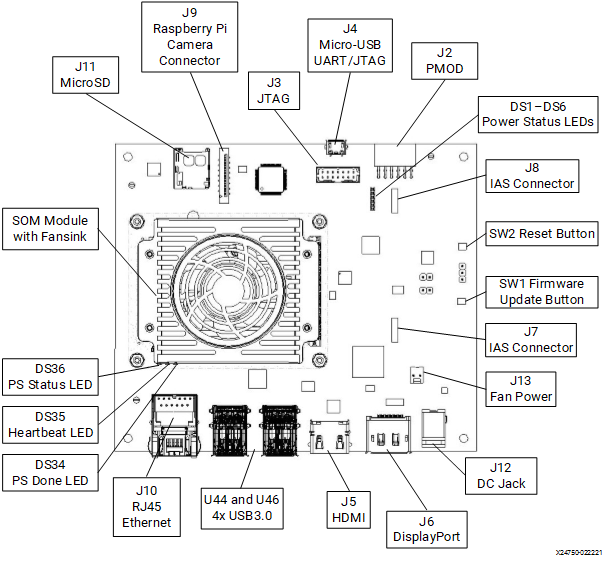

Kria™ KV260 Vision AI Starter Kit Defect Detection Tutorial |
Setting Up the Board and Application Deployment |
Setting Up the Board and Application Deployment¶
Introduction¶
This document shows how to set up the board, and run the defect-detect application.
This guide and its prebuilt are targeted for Ubuntu® 22.04 and AMD 2022.1 toolchain. The previous version of this application (on AMD 2021.1 toolchain) targeted to PetaLinux is still available online.
Booting up Linux¶
Before continuing with defect-detect application specific instructions, if not yet done so, boot Linux with the instructions from the Kria Starter Kit Linux boot page.
NOTE: The Defect Detect application requires starting the application using command line through universal asynchronous receiver-transmitter (UART) instead of GNOME Desktop.
Defect Detect requires kernel version 5.15.0-1013 or newer.
Introduction to the Test Environment¶
Setting Up the Live Source¶
When setting up the SOM Board for the live camera source capturing mango image displayed on a monitor, adhere to the following guidelines:
Keep the board firmly held in a static position.
The board should be directly opposite to the monitor (180 deg).
In the test environment, keep the board at an appropriate distance (31 cm) from the monitor.
According to the model of the monitor, set brightness and contrast to 45 and 17 respectively.
Ensure that the room is closed. Only natural light should pass through the glass windows at daytime. At night, use artificial lights but that should not be opposite to the monitor.
To avoid over exposure of light, do not place the monitor opposite to an open door or window.
Ensure that the live source should be able to capture the mango completely.
The camera should be focused only on the mango image that is displayed.
In the test environment, the light intensity is to be ~08 LUX.
NOTE: If the preview image is not satisfactory, adjust the above mentioned parameters.
Setting Up the Test Environment¶
NOTE: Ensure that the Gstreamer packages are installed on the Linux PC. If the Linux distribution is on Ubuntu, make sure its version is at least 16.04.
Download all the sample mango images from the Cofilab site to the Linux PC.
NOTE: If the file fails to download, copy the link, and open in a new browser tab to download the file.
As the downloaded images are in JPG format, convert them to GRAY 8 (Y8) format using the following steps.
Unzip the downloaded rar file.
In the Linux PC, go to
DB_mango.Copy and save the following script as
convert_jpeg_y8.sh:for file in ./*; do f=$(echo "${file##*/}"); filename=$(echo $f| cut -d'.' -f 1); #file has extension, it return only filename echo $filename gst-launch-1.0 filesrc location=$file ! jpegdec ! videoconvert ! videoscale ! video/x-raw, width=1280, height=800, format=GRAY8 ! filesink location=$filename.y8 done cat Mango_*.y8 > input_video.y8
Make the script executable:
chmod +x convert_jpeg_y8.shRun the script
convert_jpeg_y8.shas follows:./convert_jpeg_y8.sh >& file.txt
Once the above command is completed, the script produces
input_video.y8as input to the Defect Detect application.Copy
input_video.y8from the Linux PC to the SOM board. If copied to a SD card, it can be found in/boot/firmw,are/input_video.y8. In order for containers to access the file, copy it to/tmp/and containers can then also access it from its/tmp/folder. Then copy it to the/home/directory in container.NOTE: Delete all files except
input_video.y8.
The Defect Detection application’s design takes, processes, and displays images on to the monitor.
See Known Issues with the Defect Detect application.
Application Specific Hardware Setup¶
Besides the hardware configurations required in the Kria Starter Kit Linux boot for booting Linux, the Defect Detect Application requires the following:

Monitor: Defect detect requires a 4k monitor, so before booting, connect a 4k monitor to the board using either the DP or HDMI port.
Camera Connection: Ensure that the board is powered off, and then connect AR0144 to IAS connector J7.
Downloading and Loading Application Firmware¶
Search the package feed for packages compatible with the KV260.
ubuntu@kria:~$ sudo apt search xlnx-firmware-kv260 Sorting... Done Full Text Search... Done xlnx-firmware-kv260-aibox-reid/jammy 0.1-0xlnx1 arm64 FPGA firmware for Xilinx boards - kv260 aibox-reid application xlnx-firmware-kv260-benchmark-b4096/jammy 0.1-0xlnx1 arm64 FPGA firmware for Xilinx boards - kv260 benchmark-b4096 application xlnx-firmware-kv260-defect-detect/jammy 0.1-0xlnx1 arm64 FPGA firmware for Xilinx boards - kv260 defect-detect application xlnx-firmware-kv260-nlp-smartvision/jammy,now 0.1-0xlnx1 arm64 [installed] FPGA firmware for Xilinx boards - kv260 nlp-smartvision application xlnx-firmware-kv260-smartcam/jammy 0.1-0xlnx1 arm64 FPGA firmware for Xilinx boards - kv260 smartcam application
Install firmware binaries.
sudo apt install xlnx-firmware-kv260-defect-detect
Dynamically load the application firmware.
The firmware consist of bitstream and device tree overlay (dtbo) file. The firmware is loaded dynamically on user request once Linux is fully booted. The xmutil utility can be used for that purpose.
Disable the desktop environment.
sudo xmutil desktop_disable
NOTE: Executing “xmutil desktop_disable” will cause the desktop on the monitor to be disabled. Use any serial terminal to continue issuing Linux commands via port J4, and do not rely completely on the desktop environment.
After running the application, the desktop environment can be enabled again with:
sudo xmutil desktop_enable
After installing the firmware, execute xmutil listapps to verify that it is captured under the listapps function and to have dfx-mgrd re-scan and register all accelerators in the FW directory tree.
sudo xmutil listapps
Switch to a different platform for a different application:
When there is already another accelerator/firmware being activated, unload it first, then switch to
xlnx-app-kv260-defect-detect.sudo xmutil unloadapp sudo xmutil dp_unbind sudo xmutil loadapp kv260-defect-detect sudo xmutil dp_bind modetest -M xlnx -D B0010000.v_mix -s 52@40:3840x2160@NV16
NOTE: 4K Monitor should always be connected.
Docker Based Application Preparation¶
Pull the latest Docker image for defect-detect using the following command:
docker pull xilinx/defect-detect:2022.1
The storage volume on the SD card can be limited with multiple Dockers. If there are space issues, you can use following command to remove the existing container.
docker rmi --force $INSTALLED_DOCKER_IMAGE
You can find the images installed with the following command:
docker images
Launch the Docker using the following command. The firmware must be loaded before launching the Docker container.
docker run \ --env="DISPLAY" \ --env="XDG_SESSION_TYPE" \ --net=host \ --privileged \ --volume /tmp:/tmp \ --volume="$HOME/.Xauthority:/root/.Xauthority:rw" \ -v /dev:/dev \ -v /sys:/sys \ -v /etc/vart.conf:/etc/vart.conf \ -v /lib/firmware/xilinx:/lib/firmware/xilinx \ -v /run:/run \ -it xilinx/defect-detect:2022.1 bash
It launches the defect-detect Docker image container.
root@xlnx-docker/#
Running the Defect Detect Application¶
There are two ways to invoke the Defect Detection application: Jupyter Notebook or command line.
Jupyter Notebook¶
Jupyter Notebook works as an example to show the capability of the defect-detect application for specific configurations.
The Jupyter Notebook Defect Detect application supports the following modes:
0 ==> File Input and File Sink
1 ==> Live Normal Mode. Live Source and Display Out Normal Mode
2 ==> Live Demo Mode. Live Source and Display Out
3 ==> File In Display Out
4 ==> Live In and File Out
5 ==> File In Display Out Demo Mode
The default mode is live source and display out (mode 1). Use the playback variable to change the mode.
NOTE: The defect-detection Jupyter notebook application is launched under the
ubuntuuser.
To start the defect-detection Jupyter notebook application, perform the following steps:
Get the list of running Jupyter servers with the following command:
jupyter-notebook listStop the default Jupyter Notebook using the following command, if jupyter server is already running:
jupyter-notebook stop 8888
Launch the Jupyter Notebook using the following command:
jupyter-notebook --notebook-dir=/opt/xilinx/kv260-defect-detect/share/notebooks/ --ip=<IP Address> --allow-root // fill in ip-address from ifconfig, eth0
Jupyter Notebook requires an IP address. Perform the following steps if the IP address is not assigned by default.
If using a direct connection (no DHCP), see the public documentation on how to configure a PC with a static IP on the same subnet.
For the SOM target, set the desired IP address within the same subnet using
ifconfigsimilar to the following example:ifconfig eth0 <user defined IP> netmask <user defined netmask>
Output example:
[I 17:08:04.080 NotebookApp] Serving notebooks from local directory: /tmp/notebooks
[I 17:08:04.081 NotebookApp] Jupyter Notebook 6.4.12 is running at:
[I 17:08:04.081 NotebookApp] http://xxx.yyy.zzz.ttt:8888/?token=545e6a8950269d86c30e7c271b04cc0e6d0fe4df4ffefe0a
[I 17:08:04.081 NotebookApp] or http://127.0.0.1:8888/?token=545e6a8950269d86c30e7c271b04cc0e6d0fe4df4ffefe0a
[I 17:08:04.081 NotebookApp] Use Control-C to stop this server and shut down all kernels (twice to skip confirmation).
To access the Defect Detection Jupyter Notebook, use the path returned by the jupyter-notebook list command.
A Jupyter Notebook user can run cell by cell or run the defect detection full pipeline in Jupyter Notebook. To do this, go to defect-detect.ipynb, then from the menu bar, select Kernel, and then select Restart Kernel & Run All Cells. The notebook by default expects file source location to be /home/input_video.y8. Make changes in the notebook if needed.
When using a file sink, data is dumped in the rootfs (/home/). Offload the output files to the PC and play using a YUV player. In the YUV player, select the color as Y and the custom size as 1280x800.
Command Examples¶
Examples:
NOTE: Only one instance of the application can run at a time.
For File-In and Display-Out playback in demo mode, run the following command:
defect-detect -i input_video.y8 -d 1
NOTE: The three-stage outputs display on the DP/HDMI with 4 fps rate. This mode is enabled to run the pipeline with a slower rate for you to analyze the different outputs.
For File-In and File-Out playback, run the following command:
defect-detect -i input_video.y8 -x raw.y8 -y pre_pros.y8 -z final.y8
NOTE: The three-stage outputs dump into the files. It is mandatory to specify all the three output file names.
For File-In and Display-Out playback, run the following command:
defect-detect -i input_video.y8
NOTE: The 3-stage outputs display on the DP/HDMI. Change the input file path as appropriate.
For Live-In and File-Out playback, run the following command:
defect-detect -x raw.y8 -y pre_pros.y8 -z final.y8
NOTE: The three-stage outputs dump into the files. It is mandatory to specify all the three output file names.
For Live-In and Display-Out playback, run the following command:
defect-detectNOTE: The three-stage outputs display on the DP/HDMI.
For Live-In and Display-Out playback in demo mode, run the following command:
defect-detect -d 1
The three-stage outputs display on the DP/HDMI with a 4 fps rate. This mode is enabled to run the pipeline with a slower rate for you to analyze the different outputs.
Command Line¶
Use the command line to set the resolution, configuration file path, and more using the defect-detect application.
More combinations could be made based on the options provided by the defect-detect application.
Defect Detection Application Usage
defect-detect --help
Usage:
defect-detect [OPTION?] - Application to detect the defect of Mango on an Xilinx board.
Help Options:
-?, --help Show help options
--help-all Show all help options
--help-gst Show GStreamer Options
Application Options:
-i, --infile=file path Location of input file
-x, --rawout=file path Location of capture raw output file
-y, --preprocessout=file path Location of pre-processed output file
-z, --finalout=file path Location of final output file
-w, --width=1280 Resolution width of the input
-h, --height=800 Resolution height of the input
-r, --framerate=60 Framerate of the input source
-d, --demomode=0 For Demo mode value must be 1
-c, --cfgpath=/opt/xilinx/kv260-defect-detect/share/vvas/ JSON config file path
The application is targeted to run an input source that supports GRAY8 (Y8) format with a resolution of 1280x800.
Once done with the Defect Detection application, to switch to another accelerator application after defect detection application, first exit out of the container using exit, then unload it by running the following command:
sudo xmutil unloadapp kv260-defect-detect
Sensor Calibration for the Live Source¶
While running the Defect Detection application through the command line or in the Jupyter Notebook, ar0144-sensor-calib.sh script file being called from the application code to perform the sensor calibration.
If the preview image is not properly displayed, use the ar0144-sensor-calib.sh script (present in /opt/xilinx/kv260-defect-detect/bin) to change various sensor calibration parameter values such as:
Brightness
Contrast
Saturation
Exposure Metering
GAIN
Exposure
GAMMA
Make sure that the Defect Detection application is running in the background when calibrating the sensor.
Save the values in the script, and run the script to apply the new values. For example:
ar0144-sensor-calib.sh /dev/mediaX (where X is the corresponding media node for the AR0144 sensor)
File Structure of the Application¶
To view details, click here.
The application is comprised of the following files:
Binary File: =>
/opt/xilinx/kv260-defect-detect/bin
| Filename | Description |
|---|---|
| defect-detect | main app |
Script File: =>
/opt/xilinx/kv260-defect-detect/bin
| Filename | Description |
|---|---|
| defect-detect-install.py | Script to copy Jupyter notebook to user directory |
| ar0144-sensor-calib.sh | Script to calibrate sensor for user test environment |
Configuration Files: =>
/opt/xilinx/kv260-defect-detect/share/vvas/
| Filename | Description |
|---|---|
otsu-accelarator.json |
Configuration of OTSU accelerator |
cca-accelerator.json |
Configuration of CCA accelerator |
preprocess-accelarator.json |
Configuration of pre-process accelerator |
text2overlay.json |
Configuration of text2overlay software accelerator |
Jupyter Notebook file: =>
/opt/xilinx/kv260-defect-detect/share/notebooks/
| Filename | Description |
|---|---|
defect-detect.ipynb |
Jupyter notebook file to run the Defect Defection pipeline |
Next Steps¶
Go back to the KV260 SOM Defect Detect Design Start Page.
Copyright © 2021-2024 Advanced Micro Devices, Inc